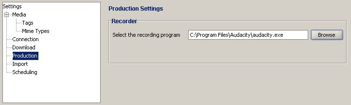

Allows you to set the application to record a production.

The Production view contains these fields:
| Select the recording program | The currently selected recording program's location and application |
| Browse | Brings up a helping you to select the recording program from your computer |